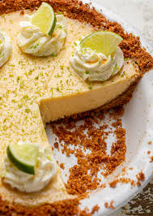

Alfredo Recipe
:max_bytes(150000):strip_icc():format(webp)/54135-seafood-fettuccine-beauty-3x4-570c3facfabe4ddeb7d74c62c7fa5775.jpg)
Description
To make seafood alfredo, start by preparing the seafood of your choice, such as shrimp, scallops, or a mix of seafood, by cleaning and seasoning it with salt, pepper, and a touch of garlic. In a large pan, melt butter over medium heat and sauté the seafood until it's cooked through and tender, then set it aside. In the same pan, add more butter and minced garlic, cooking until fragrant. Pour in heavy cream, stirring occasionally, and bring it to a simmer. Gradually add grated Parmesan cheese, stirring constantly until the sauce is smooth and creamy. Season with salt, pepper, and a pinch of nutmeg. Add cooked pasta, such as fettuccine, to the sauce and toss to coat. Finally, gently fold in the cooked seafood, ensuring everything is well combined. Serve hot, garnished with chopped parsley and extra Parmesan.
Ingredients
- 1 pound mixed seafood (shrimp, scallops, or your choice)
- Salt and pepper (to taste)
- 4 cloves garlic, minced
- 6 tablespoons butter
- 1 ½ cups heavy cream
- 1 cup grated Parmesan cheese
- A pinch of nutmeg (optional)
- 12 ounces fettuccine or your preferred pasta
- Chopped parsley (optional)
- Additional grated Parmesan cheese (optional)
Steps
- Clean and season 1 pound of mixed seafood (shrimp, scallops, or your choice) with salt and pepper.
- In a large pan, melt 2 tablespoons of butter over medium heat.
- Add 2 cloves of minced garlic and sauté until fragrant.
- Add the seasoned seafood and cook until it’s just done and tender. Remove the seafood from the pan and set aside.
- While the seafood is cooking, boil water in a large pot. Add salt and 12 ounces of fettuccine (or your preferred pasta) to the boiling water.
- Cook the pasta according to the package instructions until al dente. Drain the pasta and set it aside.
- In the same pan used for the seafood, melt 4 tablespoons of butter over medium heat.
- Add 2 cloves of minced garlic and cook until fragrant.
- Pour in 1 ½ cups of heavy cream, stirring occasionally, and bring to a simmer.
- Gradually stir in 1 cup of grated Parmesan cheese until the sauce is smooth and creamy.
- Season the sauce with salt, pepper, and a pinch of nutmeg (optional).
- Add the cooked pasta to the Alfredo sauce in the pan and toss to coat the pasta evenly.
- Gently fold in the cooked seafood, ensuring it is well combined with the pasta and sauce.
- Serve the seafood Alfredo hot, garnished with chopped parsley and additional grated Parmesan cheese if desired.
Baked French Toast Recipe
:max_bytes(150000):strip_icc():format(webp)/20934-baked-french-toast-DDMFS-4x3-e6e9d9d8b1ad4cb48efbec5d8f89d5fa.jpg)
Description
To make baked French toast, grease a baking dish and arrange thick slices of bread (like challah or brioche) in a single layer. In a bowl, whisk together eggs, milk, heavy cream, sugar, vanilla, and a pinch of cinnamon, then pour this custard over the bread, ensuring it’s fully soaked. Cover and refrigerate for a few hours or overnight. When ready, preheat the oven to 350°F (175°C), uncover the dish, and optionally sprinkle with brown sugar and cinnamon. Bake for 35-45 minutes until the top is golden and the custard is set. Serve warm with syrup, berries, or whipped cream.
Ingredients
- 1 loaf of bread (challah, brioche, or French bread)
- 6 large eggs
- 2 cups milk
- ½ cup heavy cream
- ½ cup granulated sugar
- 2 teaspoons vanilla extract
- 1 teaspoon ground cinnamon (optional)
- ¼ teaspoon ground nutmeg (optional)
- Butter or cooking spray (for greasing the baking dish)
- ¼ cup brown sugar (optional, for topping)
- Additional cinnamon (optional, for topping)
Steps
- Preheat your oven to 350°F (175°C) and grease a baking dish with butter or cooking spray.
- Slice a loaf of bread (such as challah or brioche) into thick slices and arrange them in a single layer in the baking dish, slightly overlapping if necessary.
- In a mixing bowl, whisk together 6 large eggs, 2 cups milk, ½ cup heavy cream, ½ cup granulated sugar, 2 teaspoons vanilla extract, and 1 teaspoon ground cinnamon (optional).
- Pour the custard mixture evenly over the bread slices, ensuring each piece is well-soaked.
- Cover the dish with plastic wrap or foil and refrigerate for at least a few hours or overnight to allow the bread to absorb the custard.
- Remove the cover and, if desired, sprinkle the top with a mixture of brown sugar and cinnamon for added sweetness and crunch.
- Bake the French toast in the preheated oven for 35-45 minutes, or until the top is golden brown and the custard is set.
- Let it cool for a few minutes before serving. Serve warm with syrup, fresh berries, powdered sugar, or whipped cream.
Key Lime Pie Recipe

Description
To make a Key lime pie, start by preheating your oven to 350°F (175°C) and preparing a graham cracker crust by mixing crushed graham crackers, sugar, and melted butter, then pressing it into a pie dish. Bake the crust for about 10 minutes and let it cool. Meanwhile, whisk together sweetened condensed milk, fresh Key lime juice, and egg yolks until smooth and creamy. Pour the filling into the cooled crust and bake for 15-20 minutes until the filling is set but still slightly jiggly in the center. Let the pie cool to room temperature, then chill in the refrigerator for a few hours. Serve it cold, topped with whipped cream and lime zest for a tangy, refreshing dessert.
Ingredients
- 1 ½ cups graham cracker crumbs
- ¼ cup granulated sugar
- 6 tablespoons unsalted butter, melted
- 1 can (14 ounces) sweetened condensed milk
- ¾ cup fresh Key lime juice
- 4 large egg yolks
- Whipped cream (for topping, optional)
- Lime zest (for garnish, optional)
Steps
- Preheat your oven to 350°F (175°C) and prepare a graham cracker crust by mixing 1 ½ cups graham cracker crumbs, ¼ cup granulated sugar, and 6 tablespoons melted butter. Press the mixture into the bottom and up the sides of a pie dish.
- Bake the crust in the preheated oven for about 10 minutes. Remove and let it cool.
- In a mixing bowl, whisk together 1 can (14 ounces) sweetened condensed milk, ¾ cup fresh Key lime juice, and 4 large egg yolks until smooth and creamy.
- Pour the filling into the cooled crust and bake for 15-20 minutes, or until the filling is set but still slightly jiggly in the center.
- Allow the pie to cool to room temperature, then refrigerate for a few hours to chill and set completely.
- Before serving, optionally top with whipped cream and garnish with lime zest.